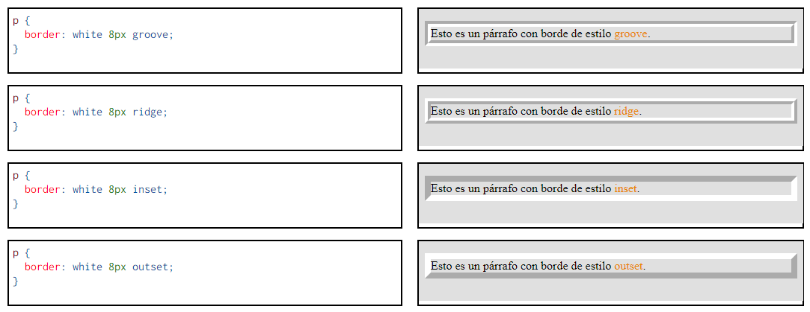
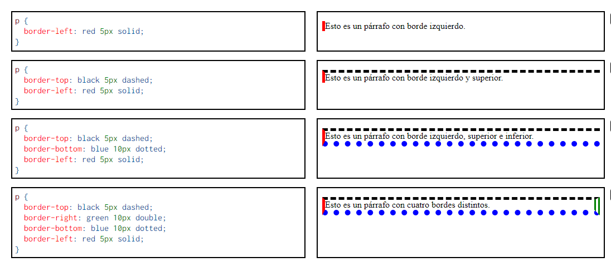

Borde en CSS
Cualquier elemento de una página web puede tener un borde (en inglés, border).
En esta lección se comentan las propiedades CSS que permiten definir el borde de un elemento.
Se comentan tanto las propiedades CSS 2.1 como algunas propiedades CSS 3.
En la CSS 3: Bordes se comentan más propiedades CSS 3 relacionadas con bordes.
La propiedad compuesta borderborder
Recomendación CSS2 Mozilla Developer Network
La propiedad compuesta border permite establecer simultáneamente los cuatro bordes (arriba, derecha, abajo e izquierda) de un elemento, definiendo su:
1. color (nombre de color o código RGB o el valor transparent)
2. grosor (valor absoluto de distancia, o los valores thin (fino), medium (medio) o thick (grueso))
3. estilo
Estilos de bordes
Los estilos de bordes definidos en CSS 2 son none, hidden, dotted, dashed, solid, double, groove, ridge, inset y outset.
Los estilos groove, ridge inset y outset producen un efecto tridimensional, pero el resultado depende del color del borde y de los colores de fondo del elemento y del elemento superior:

Las propiedades compuestas border-top, border-right, border-bottom y border-left
Las propiedades compuestas border-top, border-right, border-bottom y border-left permiten establecer de forma independiente los cuatro bordes (arriba, derecha, abajo e izquierda, respectivamente) de un elemento, definiendo su color, su grosor y su estilo. Se pueden escribir las tres características de cada borde en cualquier orden. Se puede definir uno, dos, tres o cuatro bordes.
